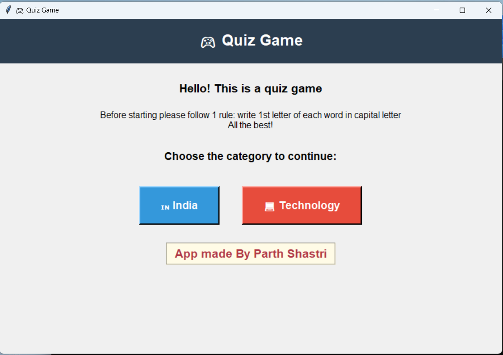
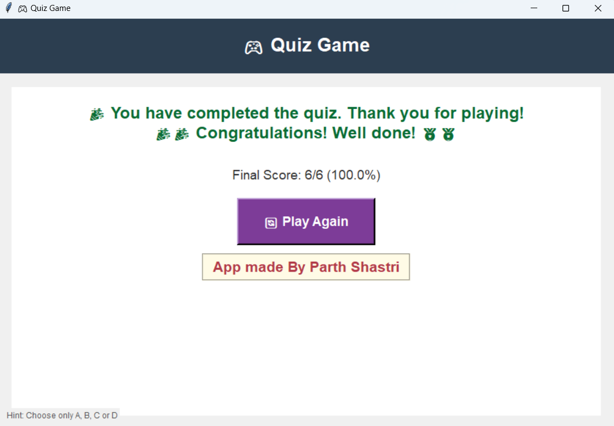

My Projects
About Me
Home
I love building apps that are both smart and fun to use.
🔢 Scientific Calculator
A powerful calculator with keyboard support, history tracking, and a clean GUI.
It handles complex operations and makes solving equations easy and efficient.
here are few images for this calculator


💱 Currency Converter
Integrated with my calculator, this tool converts currencies with real-time rates.
It includes a history panel so users can track their conversions.
It can convert between the following currencies:
- USD
- INR
- EUR
Here are few images for this currency calculator

🧠 Quiz Game
An interactive quiz app that challenges users with multiple-choice questions.
It’s designed to be educational and fun, with instant feedback and score tracking.
It has two category
here are few images for this Quiz Game


🔖 Bookmark Manager
A stylish and easy-to-use tool for saving and organizing web links.
I improved its layout and fixed HTML errors to make it more user-friendly.
🌐 PyScript & Kivy Experiments
I’ve been exploring how to bring my Python apps to the web using PyScript,
and porting them to Kivy for cross-platform GUI development.
Each project helps me learn something new — from design thinking to debugging.
I always aim to make my apps useful, attractive, and enjoyable to use.